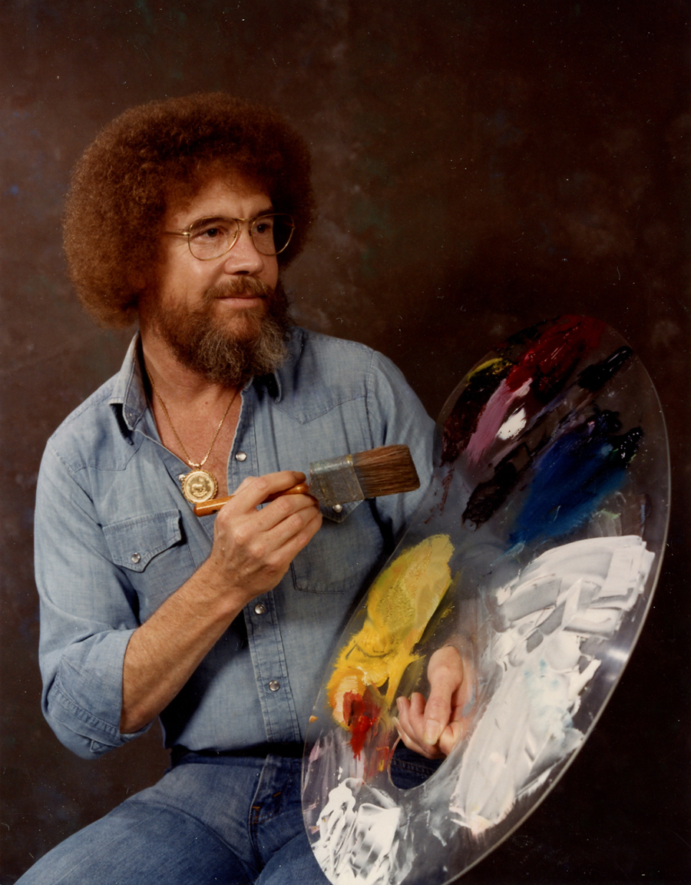
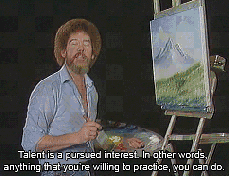

Bob Ross
A painter who taught people "The Joy of Painting"
❛❛ We don't make mistakes, just happy little accidents. ❜❜
Robert Norman Ross
Bob Ross, in full Robert Norman Ross, (born October 29, 1942, Daytona Beach, Florida, U.S.—died July 4, 1995, New Smyrna Beach, Florida), American painter and television personality whose popular PBS television show The Joy of Painting (1983–94) made him a household name as the painting teacher to the masses.
Bob Ross
Learning to Paint
Stationed first in Florida he was eventually transferred to an airbase in Alaska. During his service there Bob took his first painting lesson at a U.S.O. Club in Anchorage. To augment his Air Force pay Bob took a job as a bartender and sold his landscape paintings on gold prospecting pans to tourists. When he left the Air Force and returned home to Florida Bob attended various art schools and painting classes until he discovered the “wet-on-wet” painting technique being taught by William Alexander. Bob continued to experiment and refine the wet-on-wet technique ultimately creating his own unique version along with the custom made paints, brushes and knives need to follow it. The Bob Ross wet-on-wet technique is also known as “alla prima” or “direct painting”. Work created using the “alla prima” technique can be completed in a single session. From the 16th century until todayThroughout art history from the 16th century until today artists such as Jan van Eyck, Diego Velázquez and Thomas Gainsborough as well as impressionists Claude Monet, and Vincent van Gogh, realists John Singer Sargent and even modern artists like Willem de Kooning have, in different ways, employed the alla prima technique.
❛❛ I started painting as a hobby when I was little. I didn't know I had any talent. I believe talent is just a pursued interest. Anybody can do what I do.❜❜
Teaching others to paint
Bob was passionate about sharing his love for painting with the world and in 1982 along with his partners he launched the Joy of Painting on public television. To promote the television show and reach a greater audience Bob toured America teaching others to paint. In the beginning, the classes that were offered in shopping malls and art stores yielded only small groups of students. As word of the popular TV show grew so did the live audiences for his public lessons. From 1982 through 1994, Bob recorded more than 400 episodes and the The Joy of Painting became and remains today, one of the most popular and well known shows on public television. Bob’s passion for teaching and inspiring others lives on today through the thousands of instructors who teach his method around the world.
Ross teaching others to paint
A media darling
Although he might seem shy and retiring Bob was a savvy media personality. He often reached out to his viewers for ideas and shared their successes with his audience. He was regularly asked to appear on talk shows where he entranced the live studio audiences. He famously recorded a promo for MTV when the network was still young and growing.

Photo from a Documentary "Bob Ross: Happy Accidents, Betrayal and Greed"